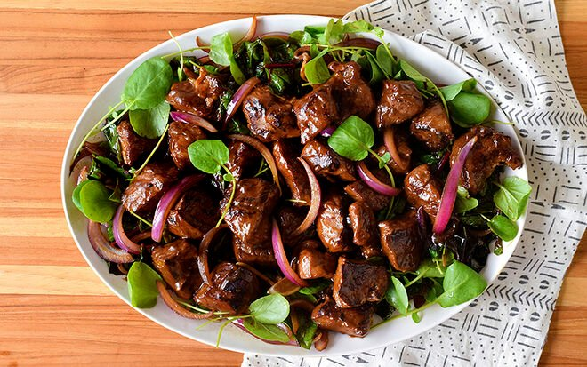

Shaking Beef/Bo Luc Lac

What is Shaking Beef?
Shaking beef or bò lúc lắc is a French-inspired Vietnamese dish that consists of beef sauteed with cucumber, lettuce, tomatoes, red onion, pepper, and soy sauce. The beef is cut into small cubes the size of playing dice before being sauteed. Beef used to be a luxury ingredient, therefore the dish was mostly served at formal events, such as wedding banquets and anniversaries, however nowadays, it has become a common food. Before French colonization cows were only used for manual labour and were working animals.
Ingredients
- 2 lb thick rib eye steak, boneless, cut into 1-inch (2 1/2 cm) cubes
- 10 cloves garlic, minced
- 3 tablespoons brown sugar
- 5 tablespoons soy sauce, divided
- 2 tablespoons oyster sauce
- 1 tablespoon fish sauce
- freshly ground black pepper, to taste
- 1 tablespoon granulated sugar
- 2 tablespoons white vinegar
- 2 tablespoons water
- 1 red onion, sliced into rings
- 2 bunches watercress
- 3 roma tomatoes, sliced
- 2 tablespoons vegetable oil
- fresh cilantro, for garnish
- white rice, cooked, for serving
Directions
- In a large bowl, combine the beef, garlic, brown sugar, 3 tablespoons of soy sauce, oyster sauce, fish sauce, and black pepper. Toss to combine. Let marinate at room temperature for 30 minutes.
- In small bowl, combine the granulated sugar, remaining 2 tablespoons of soy sauce, white vinegar, and water. Add the red onion slices and coat the red onions in the dressing thoroughly. Set aside to soak.
- On a platter, arrange the watercress and tomato slices.
- Preheat a large wok or skillet over high heat, then add the vegetable oil. When the oil is shimmering, swirl the oil around in the pan. Add half of the beef cubes and sear on all sides, shaking the pan, until the meat is slightly charred and medium rare, 3-5 minutes. Set the meat aside and repeat with remaining beef.
- Arrange the beef on the bed of watercress and tomatoes. Top with the dressed red onions and fresh cilantro.
- Serve with domed white rice.
Nutrition Facts
Per Serving: Calories 504, Fat 33g, Carbs 12g, Fiber 1g, Sugar 8g, Protein 39g